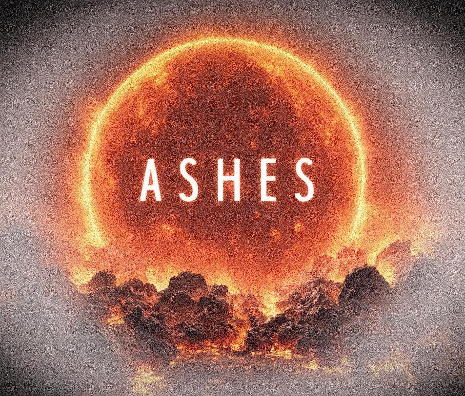

Dr Marie Van de Sande
Oort Fellow at Leiden Observatory
I'm an astrochemist specialised in the chemistry around evolved stars. In particular, I develop chemical kinetics models of the outflows of Asymptotic Giant Branch stars and use these to interpret observations of these complex environments.

My ERC Starting Grant ASHES will start in August 2026 at University College Dublin. The goal of ASHES is to quantify how the dust produced by AGB stars depends on the specific outflow from which it originates. Click here for more information and job openings.